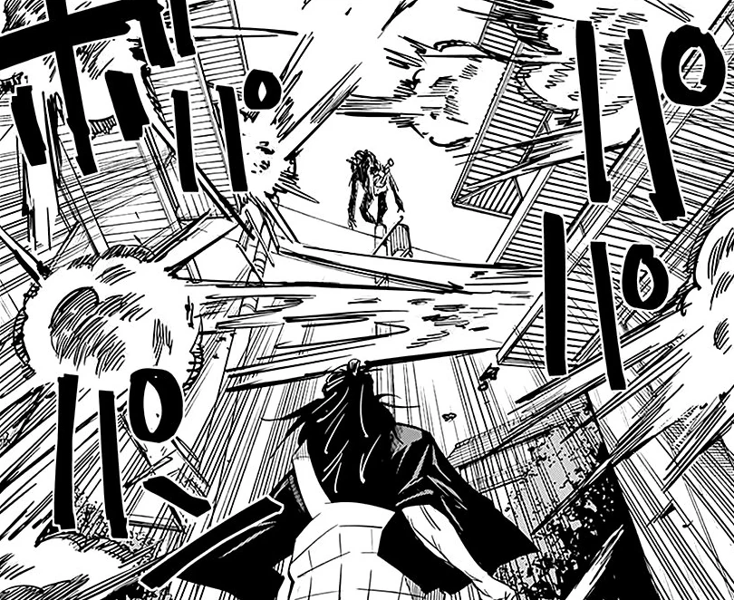
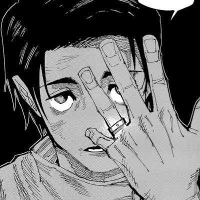

Yuta Okkotsu (乙骨憂太 Okkotsu Yūta?) es el protagonista de la serie
manga Tokyo Metropolitan Curse Technical School y uno de los
personajes de la serie secuela, Jujutsu Kaisen. Es uno de los
cuatro chamanes de Clase Especial y estudiante de segundo año
del Colegio Técnico de Magia Metropolitana de Tokio, compañero
de Maki Zenin, Panda y Toge Inumaki. Se encontraba en una misión
con Miguel en Kenia, pero tras el incidente en Shibuya,
regresó a Japón
Fue amigo de la infancia de Rika Orimoto, quien murió en un
trágico accidente automovilístico. Por el rechazo que sentía con
la muerte de su amiga, la convirtió en una maldición de Grado
Especial. Desde entonces, se vio acechado por el poder de su
amiga, ahora maldita. Para evitar hacer sufrir a otros, accede a
ser ejecutado, en su lugar, Satoru Gojo lo inscribe al Colegio
Técnico de Magia Metropolitana de Tokio para entrenarlo y
convertirlo en un chamán con el cual pueda trabajar a futuro.
Apariencia
Cara de Yuta
Yuta es un adolescente delgado y de buena estatura. Durante Tokyo
Metropolitan Curse Technical School, solía llevar su cabello
negro despeinado y gran parte de éste tapaba parte de su frente.
A partir de Jujutsu Kaisen, lleva su cabello arreglado y
separado por la mitad, parte de éste cae hacía la izquierda
tapando parte de su cara. Sus ojos son de azul oscuro y es
característico que debajo de sus ojos tenga ojeras debido a la
falta de sueño. Su lenguaje corporal hace que sea fácil decir
que Yuta es muy temeroso, su postura, es encorvada.
En su antigua escuela, usaba una camisa blanca, pantalones y
zapatos negros como uniforme. Como ropa casual, utiliza camisas
de mangas cortas con pantalones oscuros.
Después de transferirse al Colegio Técnico de Magia Metropolitana
de Tokio, recibe su propia versión del uniforme, que consiste en
una chaqueta blanca holgada con mangas que le llegan hasta los
antebrazos, mientras que el resto de la vestimenta permanece de
color negro. Durante la época invernal, suele ser visto usando
la chaqueta oscura del colegio. En caso de ir a una misión o
estar presente en un combate, lleva su katana en su respectiva
funda.
Personalidad
Yuta volumen 0
Al comienzo solía ser un joven demasiado tímido y solitario que
constantemente recibía acoso por parte de sus compañeros y otras
personas que le rodeaban. Debido a que Rika Orimoto, al
transformarse en maldición, lo persiguió desde una edad muy
temprana, no pudo establecer relaciones sanas con ninguna
persona, y ha perdido toda la confianza en sí mismo. Esto hace
que Yuta sea alguien al que le cuesta interactuar con los demás,
y sea temeroso ante personalidades más explosivas como, por
ejemplo, la de Maki Zenin.
Cree que todo lo malo que le pasa a la gente que está cerca de
él, es totalmente su culpa, lo que significa que se preocupa
genuinamente por otras personas, en un comienzo prefiere ser
ejecutado en total aislamiento debido a que es consciente del
daño que causa el estar con Rika, y hasta prefiere quedarse en
total aisladamente para no dañar a nadie. Maki acusó a Yuta de
ser un niño que toda la vida había actuado como una víctima
debido a la maldición de su amiga, y lo trato de ingenuo al
creer poder pasar por el Colegio Técnico de Magia Metropolitana
de Tokio sin la determinación necesaria, ante esto Yuta no
contradice las palabras de Maki sino que las afirma, demostrando
ser consciente de aquello.
Mas tarde cuando tiene una misión junto a Maki, la abrumación de
no solo tener a dos niños heridos sino también a su compañera,
lo ayuda a determinar su primera meta en la vida, que es poder
tener conexiones con alguien, esto ayuda a Yuta a darse cuenta
de que profundamente desea la confianza para sentir que, a pesar
de dañar a la gente, está bien para él seguir con vida. A partir
de ese punto, su personalidad cambia para bien, comienza a
mostrarse más relajado y confiado, aunque su naturaleza tímida
permanece intacta. Inclusive intenta entender a alguien como
Toge Inumaki, y logra establecer una conexión amistosa con este.
Ganar amigos ayuda a Yuta en ganar aún más confianza en sí mismo,
y el comenzar a querer encontrar una manera de exorcizar Rika,
dado que se siente responsable de que ella se convirtiera en una
maldición. Yuta también comienza a esforzarse mucho más en sus
entrenamientos con Maki, comenzó a tomar consejos e incluso
pedirlos. En esencia, Yuta quiere convertirse en alguien que
pueda ayudar a mantener a otros fuera de peligro.
Yuta ha demostrado una extremo aprecio por sus amigos, por lo que
cuando estos salen dañados no duda en mostrar el lado más oscuro
de sí mismo. Esto se ve claramente momentos previos de su pelea
con Suguru Geto, cuando vio a sus amigos lastimados, no dudo en
decirle a Geto que lo asesinaría por ello. Su enojo también le
permitió dominar a Rika, dado que cuando esta quería herir a
Maki Zenin, Yuta por primera vez logra hacer que Rika retroceda
a consciencia. Inclusive estuvo dispuesto a dar su vida a Rika
para así matar a Geto, todo con tal de vengar a sus amigos,
quienes fueron las únicas personas que le daban la confianza
para seguir viviendo. Actualmente, se puede notar que Yuta sigue
teniendo este aspecto, dado que cuando supo que durante el
ataque de Sukuna en Shibuya, Toge Inumaki había perdido un
brazo, determinó que el mataría a Yuji Itadori, ignorando la
actitud condescendiente de los altos mandos del colegio jujutsu
tenían hacía él, y también no importándole que Yuji Itadori
fuera el alumno de Satoru Gojo, el profesor que un año antes
había salvado su vida.
Cuando Yuta regresó a la preparatoria de hechicería después de un
tiempo en el extranjero, lo acompañó una nueva Rika y parecía
como si estuviera perdido en su oscuridad. Estuvo de acuerdo en
matar al otro alumno de Gojo, Yuji Itadori, para los superiores
y afirmó que era una venganza por cortarle el brazo a Toge. Yuta
tenía una personalidad mortalmente seria y fría que iba directo
al grano. Intentó matar a Yuji antes de intercambiar palabras y
luego se disculpó mientras cometía el acto. Sin embargo, todo
esto fue un acto para ayudar a proteger a Yuji de los altos
mandos. Yuta tuvo que actuar de cierta manera para hacerlo
creíble y curó a Yuji antes de que el de primer año muriera de
forma permanente. Aunque Yuta nunca conoció a Yuji, hizo todo lo
posible para engañar a la autoridad y ayudar a Yuji porque Gojo
se lo pidió. Yuji es importante para las personas que son
valiosas para Yuta y esa fue una razón más que suficiente para
que él ayudara. También simpatiza con Yuji porque estaba
exactamente en la misma situación, listo para ser ejecutado con
un poder que no podía esperar contener. Yuta no culpa a Yuji por
las acciones de Sukuna.
Sin la fachada de un asesino frío, Yuta sigue siendo una persona
amigable por naturaleza que se ha desarrollado mucho como
persona. Es mucho más sociable y menos tímido de lo que solía
ser. Cuando Gojo visitó a Yuta en África, el profesor se
sorprendió de que su alumno estuviera contando chistes. Al
reunirse con Maki, Yuta estaba emocionado de verla y expresó
preocupación por sus heridas.
Habilidades
Habilidad
Descripción
Imagen
Técnica de Discurso Maldito
Una técnica maldita heredada entre los miembros
del Clan Inumaki, que permite que, al momento
que articula algún tipo de palabra, éstas se
vean reforzada por una gran cantidad de energía
maldita y como resultado, obliga a cualquiera
que lo escuche a actuar o que se actúe sobre la
base de esas palabras. Se desconoce el modo
exacto en que Yuta adquirió la capacidad de
hacer uso de dicha técnica. A diferencia de Toge
Inumaki, tiene dificultades para controlar la
energía maldita liberada por la técnica, pero no
obstante es muy eficaz. Las palabras malditas
posible de articular son:
Muere: es una palabra maldita que obliga
al objetivo de Yuta a morir
inmediatamente sin posibilidad de
contrarrestarlo. En el caso de una
maldición, ésta muere al instante. Se
desconoce el efecto que tiene en
humanos.

Tecnica de Manipulacion del
Cielo
Es una técnica originaria de la hechicera
reencarnada Takako Uro, la cual le permite a
Yuta deformar el espacio convirtiendo el "cielo"
en una "superficie" siendo capaz de
redireccionar ataques o mover la posición de los
objetos.
Misil de Hielo Delgado: Es una forma de
usar la técnica, la cual consiste en
generar un fuerte empuje en el oponente
al poner ambas manos en contacto con
este.
Técnica de Maldición Inversa
Es una técnica maldita de curación que suele ser
muy difícil de aprender y requiere una
manipulación sofisticada de la energía maldita
con el fin de poder generar energía positiva
que, luego será utilizada por Yuta para poder
curar sus heridas en cuestión de segundos.
Incluso, es capaz de aplicarla en otros.
Expansión Territorial
En su batalla en la colonia de Tokyo contra Ryu
Ishigori y Takako Uro se muestra que al parecer
es capaz de realizar una Expansión Territorial
al tratar de activarla mismo tiempo que sus
otros dos contrincantes, sin embargo debido a el
choque de estos tres territorios lo cual
ocasiono que se anularan entre si, al igual que
los otros contrincantes Yuta no pudo demostrar
las capacidades ni la apariencia de su Expansión
Territorial.
Imagenes de Yuta
Diseño de Yuta (Anime)
Diseño de Yuta (Manga)
Yuta con Rika

Yuta con el anillo de Rika
Yuta usando el discurso maldito
Yuta vs Geto
Curiosidades
Según información revelada en el Volumen 00 del manga:
Fue internado por una neumonía y en el hospital, conoció a Rika Orimoto.
El anillo que Rika le dio, era el anillo de bodas de su madre que sacó del joyero de su abuela.
Rika era cercana a la hermana menor de Yuta, sin embargo cuando se convirtió una maldición, se volvió muy agresiva, lo que provoco que Yuta se aleje de su familia.
Rika ama a Yuta.
Según información revelada en el Jujutsu Kaisen Official
Fanbook:
Tiene 17 años.(repitió un año)
Su fecha de cumpleaños es el 07 de marzo.
Nació en la Prefectura de Miyagi, Japón.
Es un chamán de grado especial.
Su modo de inscripción al Colegio de Tokio fue por reclutamiento.
Su técnica es la Técnica de Discurso Maldito (copia) y la Técnica de Maldición Inversa.
Es bueno haciendo borradores (goma de borrar) moldeables.
Su comida favorita es el repollo con sal y aceite de sésamo.
La comida que no le gusta es la parte grasosa de los filetes.
Su causa de estrés se genera cuando es incapaz de reunirse con sus compañeros de clases.
Información revelada de la entrevista con Gege
Akutami:
La única razón detrás del cambio de peinado es porque se parecía mucho al de Megumi.
Cuando Akutami creó Tokyo Metropolitan Curse Technical School, creó primero a Yuta junto a Rika, lo pensó a ambos como un combo.
Akutami le puso Okkotsu porque le pareció un apellido que sonaba genial, y Yuta lo escogió porque el kanji tenía un buen significado.
Durante la batalla con Geto, se pudo ver que Rika y Yuta estaban muy bien coordinados, esto se debe a que Rika puede ver lo que Yuta puede ver y ambos eran capaces de compartir imágenes del frente y de atrás.
Los chamanes son personas características porque no crean maldiciones, sin embargo, Yuta inconscientemente ató el alma de Rika a su propia energía maldita. Es imposible retener el alma de un muerto sin embargo Yuta lo hizo dado que no tenía noción de lo que hacía (él realmente deseaba que Rika descanse en paz), además Rika tenía un fuerte deseo de seguir con Yuta, todo eso llevó a un vínculo similar a un error.
Los chamanes no prestaron atención al caso de Yuta antes, dado que al principio, no hubo tantos problemas (la mayoría de acontecimientos estaban relacionados a su familia). Antes del incidente del estudiante que “fue metido en el casillero” del volumen 00, hubo un incidente mayor que fue el factor decisivo, para comenzar a investigarlo y ser registrado posteriormente. Había varios chamanes que iban tras él pero fueron asesinados, lo que llevo a que Gojo se encargue del caso.
Yuta volvió a contactar a su familia, habla normalmente con su hermana, pero con sus padres sigue siendo difícil.
La familia de Yuta no es una de chamanes. Yuta es un atavismo.
Durante el El Festival de Intercambio con Kioto del 2017, Yuta tuvo una victoria completa contra los estudiantes de Kioto, dado que Rika salió en contra de la voluntad de Yuta. La limpieza después de aquello fue inmensa.
Después de que Rika fuera exorcizada, Yuta se convirtió en un chamán de cuarto grado, por ello en las escenas finales del Volumen 00, lleva uniforme negro (el color blanco es utilizado para los chicos problemáticos, para poder distinguirlos rápidamente), después de aquello Yuta regresó a ser un chamán de grado especial.
Megumi Fushiguro lo respeta porque no comienza ninguna payasada sin sentido, además del hecho de que ridículamente poderoso.
Akutami afirmó que Yuta podría comenzar a gustarle alguien más además de Rika.
Luego de una serie de investigaciones, se descubrió que es miembro distante del Clan Gojo, ya que es descendiente del chamán y espíritu vengativo, Sugawara-no-Michizan.